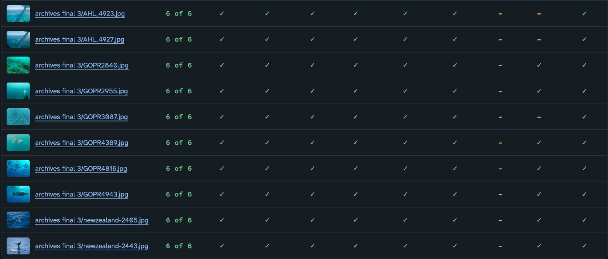

Chico Morais — Selected work
Archive Readiness Check
Checks whether photos carry what an archive needs; tested on 57 of my own ocean photos, with a dive logbook fixing the dates.

2026
Chico Morais — Selected work
Checks whether photos carry what an archive needs; tested on 57 of my own ocean photos, with a dive logbook fixing the dates.

2026